Hello! My name is Dan Podgurschi, and I love video games! I have played quite a few of them, so I decided I had an adequate amount of information regarding this topic. Enjoy!
Console Games
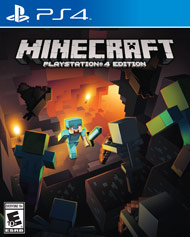The first, and one of the most popular games known, is Minecraft. As many people know, Minecraft is a first-person sandbox game that has 2 different modes: creative and survival. Survival mode starts you off with nothing in an infinite world, leaving you to find materials and food in order to stay alive. At night, creatures can come out and attack you, such as zombies or spiders. Creative mode gives you more breathing space. You can fly, build peacefully, and spawn animals. Basically, you're the god of that world. Platforms: PC, Xbox, PlayStation, mobile.
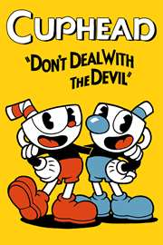
This rage-inducing game, Cuphead, has bested many people and forced them to give up. Two boys go to a casino and lose a bet with the Devil. In return, they have to give him their souls. They beg for another chance, so the Devil allows them to bring the souls that escaped him. Once you defeat all of the bosses on regular mode, you make a choice either to fight or join the Devil. If you join him, you lose your sanity, but if you fight him and win, all the souls are released and freed. Platforms: Xbox, PC.
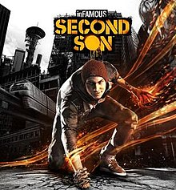
Ever wanted superpowers that can let you shoot smoke and flames out of your arms? You've pretty much found your dream game! In Infamous Second Son, you play as a brother that loves to break the law, but one day absorbs the power of a superhuman called a Conduit, thus making him illegal. The leader of the D.U.P, ironically a Conduit, attacks your entire tribe with her powers of concrete. The doctors examine all the patients, but they need the power of concrete to get everything removed. You go on a quest to find her and steal her powers to save your tribe! Platforms: Playstation

Experience ultimate first-person action with Mirror's Edge: Catalyst! Faith just got out of prison, and started her job again as a runner, delivering packages by running over different rooftops quickly. However, KrugerSec, a corporation dedicated to tracking down and killing illegal runners, captured Noah, who was like a father to you. They have guards everywhere, so you need to be careful, or you might easily get caught in an ambush! You become dedicated to busting him out, but there's a high chance you won't succeed! Platforms: PlayStation, Xbox, PC
Mature Games
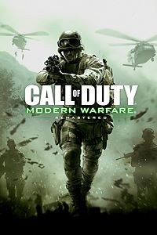Another classic, Call of Duty was first released in 2003, and has had many different variations since then. They have multiple series, such as Call of Duty: Black Ops, and Call of Duty Warfares. The Warfares have a story mode to play, which does not need internet. However, the Black Ops series is played only online, queuing up matches. You are placed on one of two teams, and you pretty much have to kill the other team in order to succeed. Platforms: PlayStation, Xbox, mobile, PC, N-Gage.
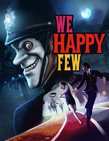
This half-horror, haif-tragedy game sets place in England, 1964. Everyone is dependent on a drug called Joy, which makes them artifically happy. You can choose to not take your pills, and stay sober, seeing the world as it really is, or mask yourself with the drug, pretending to be constantly happy. Stopping the drug makes you lucid, and lets you see what happened that led to people having to take Joy pills. However, if the people find out you stopped taking Joy pills, they will do their best to stop you, so watch out! Platforms: PlayStation, PC, Xbox.
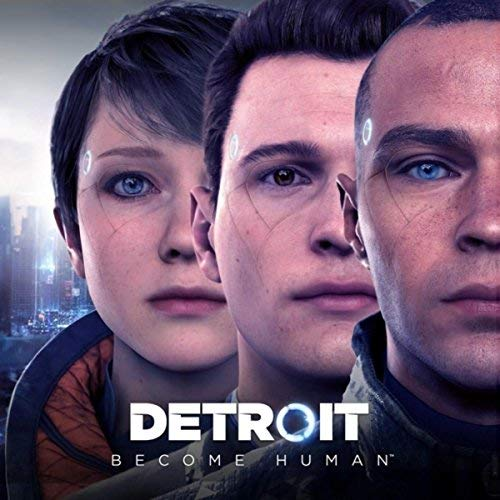
It's the future, year 2038. People started using androids to manage menial tasks, but some people don't agree with this, especially the people that got kicked out of their jobs. Some androids become conscious of this and start an organization called Jericho, where they fight for their rights. Throughtout the game, you switch between 3 different androids, and you can see the vast difference of perspective from a nanny android that saves a girl's life, an android dedicated to finding conscious androids, other wise known as deviants, and a servant android. Platforms: PlayStation.
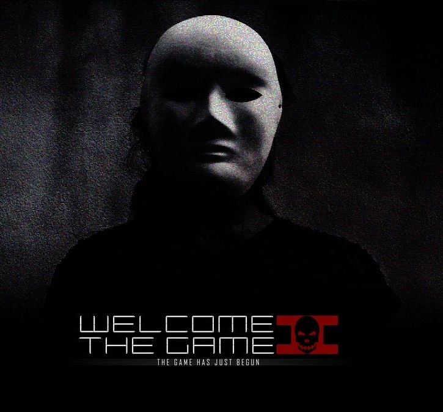
You're an investigator, trying to find a woman that has disappeared, and the only clue you have is on the shadow web, a portion of the deep web. You have to avoid the countless ambushes throughout the night as you search for any other clues that might help you reach her, finding hidden links in random websites to help you. Good luck. Platforms: PC.
PC Games
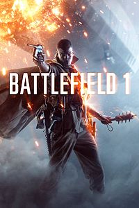Similar to Call of Duty, Battlefield is a first-player shooter game, where you can enter different matches, and comepete on teams. There are many variations of matches, such as capture the flag, conquest, or rush. You never get bored, because if you're the leader of a squad, you must constantly issue orders, and you can climb in ranks, unlocking tons of new things! Platforms: PlayStation 4, PlayStation 3, Xbox One, Xbox 360, Microsoft Windows.
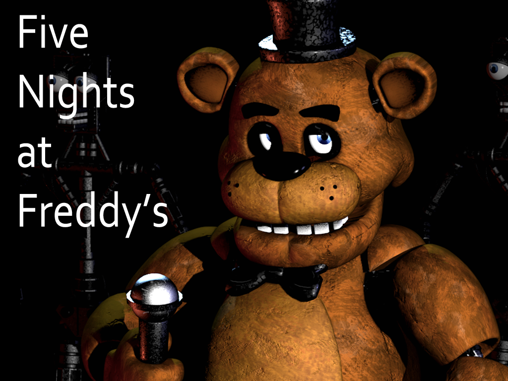
A horror game dedicated to breaking your soul, with 7 different games! You work as a security guard in a pizzeria, trying to defend yourselves from animatronics as you survive from 12 A.M. to 6 A.M. Most of the time, though, there are 7 or even 8 nights, never actually 5! Why in the world is it called Five Night's at Freddy's! Oh well....try to find Easter eggs along the way as you wade through all of the games on the hardest difficulties! Platforms: PC, mobile.
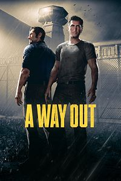
This 2-player game takes you through the story of two prisoners trying to escape, and wanting to take revenge on the person that made them go to prison in the first place. Choose a trustworthy person to play with, or else the two of you might not exactly get along, especially since many of the actions are needed to be performed by both of you. Platforms: PlayStation, Xbox, PC.
An emotional game, with tons of secrets hidden everywhere, adn so many paths to take. Discover the backstory of why monsters had to be banished to another world, and why humans were able to rule the Earth. You can either make friends, or be enemies with everyone. You probably can't complete all the secrets in your lifetime! Platforms: PC.
Recommended
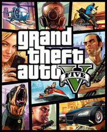WARNING: THIS GAME IS NOT SUITABLE FOR CHILDREN. AT ALL. It's probably not even appropriate for adults, but you can't say it's not action packed, no matter what you do! In GTA, you get rewarded for breaking the law, instead of following it. You can run over people, buy guns, or pretty much do anything that's illegal. However, you have to watch out; once you've commited enough crimes, the police will start coming for you.
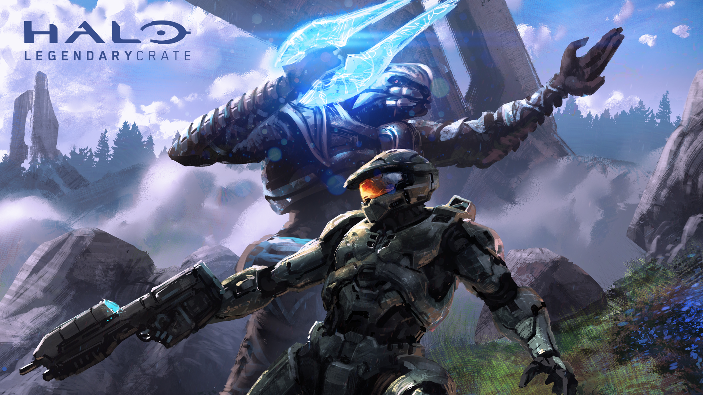
Last but most certainly not least, Halo is one of the best first-person shooter games of all time. Amazing graphics, endless matches, and constant revenge, Halo is almost an alien version of Call of Duty, except with better and more guns! You can also have a training mode, where you can just play with friends if you want to. 100% recommend! Platforms: Xbox.